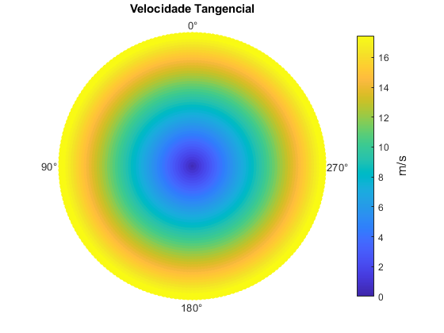
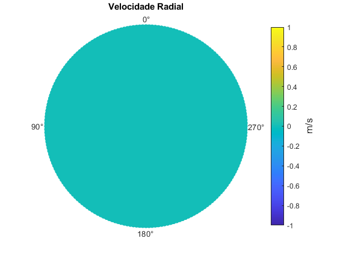
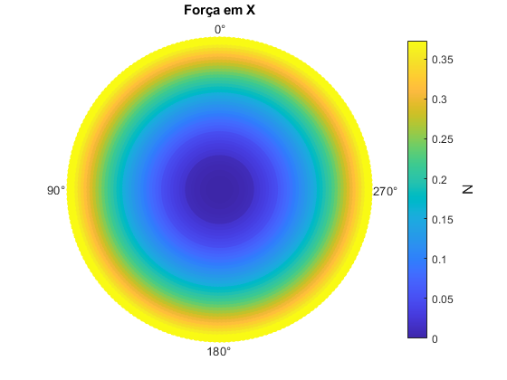
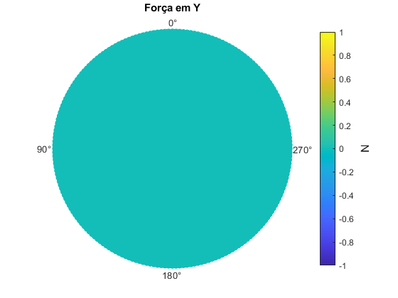
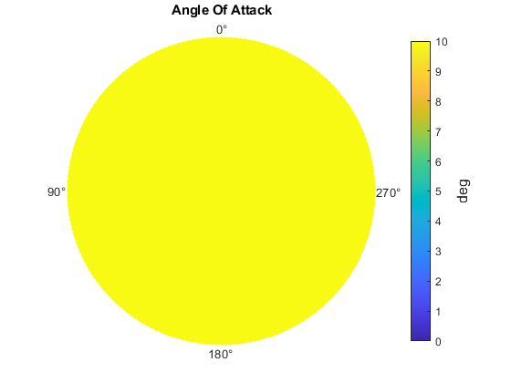
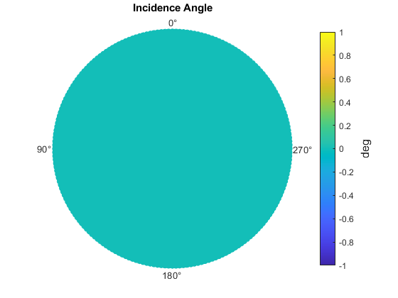
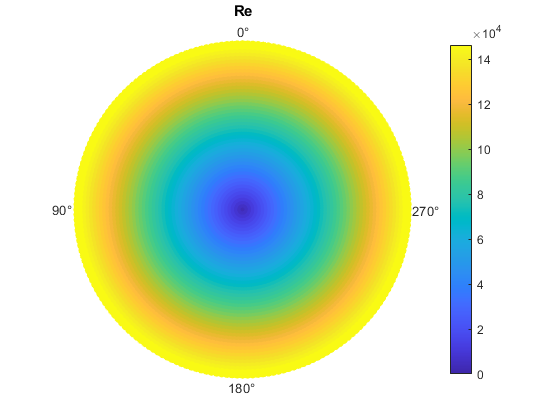
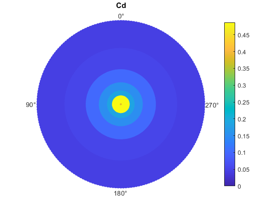
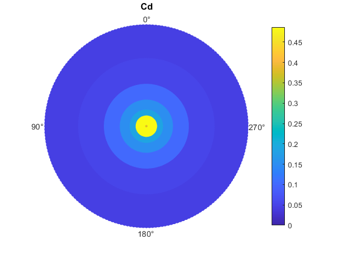

Contents
clc clear close all azimutal_points = 200; ref_blade_position = 0; azimutal_positions = azimutalDescretization(azimutal_points, ref_blade_position); % Aplicar a discretização ao cálculo da força do rotor % velocidade no rferencial inercial V_i = [0; 0; 0]; RPM = 1000; angular_velocity = [0; 0; RPM*pi/180]; orientation = [0; 0; 0]; % yaw | pitch | roll SIM.AerodynamicModelSelector = 1; SIM.atmosphereModelSelector = 2; OUTPUTS.U_T=[]; OUTPUTS.U_R=[]; OUTPUTS.U_P=[]; OUTPUTS.flowMode=[]; OUTPUTS.df_x=[]; OUTPUTS.df_y=[]; OUTPUTS.df_z=[]; OUTPUTS.alpha=[]; OUTPUTS.phi=[]; OUTPUTS.Ma=[]; OUTPUTS.Re=[]; OUTPUTS.Cd=[]; OUTPUTS.Cl=[]; ROTOR.Nb = 5; ROTOR.azimutal_positions = azimutalDescretization(azimutal_points, 0); % a matriz R_r_b é uma matriz constante ao longo do tempo for k = 1:length(azimutal_positions) ROTOR.R_r_b(:, :, k) = rotationMatrix_generator(azimutal_positions(k), 0, 0); end BLADE.chord = 0.1; BLADE.Span = 1; BLADE.No_elements = 50; BLADE.prandtlTipLosses = false; BLADE.dy = BLADE.Span / BLADE.No_elements; BLADE.RootBladeDistance = 0; BLADE.twistDistribution = 1; BLADE.root_theta = 10; BLADE.tip_theta = 10; BLADE.dA = BLADE.dy * BLADE.chord; BLADE.pos_sec = (0:BLADE.No_elements) * BLADE.dy + BLADE.RootBladeDistance; BLADE.pos_sec = [zeros(length(BLADE.pos_sec), 1), BLADE.pos_sec', zeros(length(BLADE.pos_sec), 1)]; BLADE.theta = twist_distribution(BLADE, ROTOR); airfoil = load('./airfoils/naca0012.mat').airfoil; BLADE.airfoil_name = airfoil.name; BLADE.airfoil_data = airfoil.data; % AERODAS ATMOSPHERE = atmosphereModel(0, SIM); Force_blade = zeros(azimutal_points, 3); Tb_b = zeros(azimutal_points, 3); R_i_b = rotationMatrix_generator(orientation(1), orientation(2), orientation(3)); R_b_i = transpose(R_i_b); for azimute_index = 1:length(azimutal_positions) % fprintf("> Azimute: %.2f\n", azimutal_positions(azimute_index)*180/pi) V_b(azimute_index, :) = ROTOR.R_r_b(:, :, azimute_index) * R_i_b * V_i; % fprintf("Vb_x = %.2f | Vb_y = %.2f | Vb_z = %.2f \n", V_b(azimute_index, :)); [OUTPUTS, Fb_b(azimute_index, :), Tb_b(azimute_index, :), ~, ~] = ... compute_blade_force_testFunc(R_b_i, V_b(azimute_index, :), angular_velocity, SIM, OUTPUTS, ROTOR, BLADE, ATMOSPHERE); Fb_i(azimute_index, :) = transpose( R_i_b' * Fb_b(azimute_index, :)'); Tb_i(azimute_index, :) = transpose( R_i_b' * Tb_b(azimute_index, :)')'; end % média das posições azimutais total_force_blade = ROTOR.Nb * sum(Force_blade)/azimutal_points; total_torque_blade = ROTOR.Nb * sum(Tb_b)/azimutal_points;
Gráficos AZIMUTAIS
close all polarPlot(azimutal_positions, BLADE.pos_sec(:, 2), OUTPUTS.U_T, "Velocidade Tangencial", "m/s") polarPlot(azimutal_positions, BLADE.pos_sec(:, 2), OUTPUTS.U_R, "Velocidade Radial", "m/s") polarPlot(azimutal_positions, BLADE.pos_sec(:, 2), OUTPUTS.U_P, "Velocidade Vertical", "m/s") polarPlot(azimutal_positions, BLADE.pos_sec(:, 2), OUTPUTS.flowMode, "Flow Direction", "") polarPlot(azimutal_positions, BLADE.pos_sec(:, 2), OUTPUTS.df_x, "Força em X", "N") polarPlot(azimutal_positions, BLADE.pos_sec(:, 2), OUTPUTS.df_y, "Força em Y", "N") polarPlot(azimutal_positions, BLADE.pos_sec(:, 2), OUTPUTS.df_z, "Força em z", "N") polarPlot(azimutal_positions, BLADE.pos_sec(:, 2), OUTPUTS.alpha, "Angle Of Attack", "deg") polarPlot(azimutal_positions, BLADE.pos_sec(:, 2), OUTPUTS.phi, "Incidence Angle", "deg") polarPlot(azimutal_positions, BLADE.pos_sec(:, 2), OUTPUTS.Re, "Re", "") polarPlot(azimutal_positions, BLADE.pos_sec(:, 2), OUTPUTS.Ma, "Ma", "") polarPlot(azimutal_positions, BLADE.pos_sec(:, 2), OUTPUTS.Cl, "Cl", "") polarPlot(azimutal_positions, BLADE.pos_sec(:, 2), OUTPUTS.Cd, "Cd", "")      
 
 close all
figure(); % Create a new figure hold on; % Allow multiple plots in the same figure
% Plot each column of Force_blade plot(azimutal_positions', Fb_i(:, 1), '-or', 'DisplayName', 'X'); % First column in red plot(azimutal_positions', Fb_i(:, 2), '-ok', 'DisplayName', 'Y'); % Second column in green plot(azimutal_positions', Fb_i(:, 3), '-ob', 'DisplayName', 'Z'); % Third column in blue
% Add labels, title, and legend xlabel('Azimutal Points'); ylabel('Force'); title('Forces vs Azimutal Points - Inertial Frame'); legend('show'); % Display the legend grid on; % Add a grid for better readability hold off; % Release the hold on the figure
figure(); % Create a new figure hold on; % Allow multiple plots in the same figure
% Plot each column of Force_blade plot(azimutal_positions', Fb_b(:, 1), '-or', 'DisplayName', 'X'); % First column in red plot(azimutal_positions', Fb_b(:, 2), '-ok', 'DisplayName', 'Y'); % Second column in green plot(azimutal_positions', Fb_b(:, 3), '-ob', 'DisplayName', 'Z'); % Third column in blue
% Add labels, title, and legend xlabel('Azimutal Points'); ylabel('Force'); title('Forces vs Azimutal Points - Blade Frame'); legend('show'); % Display the legend grid on; % Add a grid for better readability hold off; % Release the hold on the figure
figure(); % Create a new figure hold on; % Allow multiple plots in the same figure
% Plot each column of Force_blade plot(azimutal_positions', V_b(:, 1), '-or', 'DisplayName', 'X'); % First column in red plot(azimutal_positions', V_b(:, 2), '-ok', 'DisplayName', 'Y'); % Second column in green plot(azimutal_positions', V_b(:, 3), '-ob', 'DisplayName', 'Z'); % Third column in blue
% Add labels, title, and legend xlabel('Azimutal Points'); ylabel('Velocity'); title('Tranlation Velocity Component vs Azimutal Points - Blade Frame'); legend('show'); % Display the legend grid on; % Add a grid for better readability hold off; % Release the hold on the figure
figure(); % Create a new figure hold on; % Allow multiple plots in the same figure
% Plot each column of Force_blade plot(azimutal_positions', V_tip(:, 1), '-or', 'DisplayName', 'X'); % First column in red plot(azimutal_positions', V_tip(:, 2), '-ok', 'DisplayName', 'Y'); % Second column in green plot(azimutal_positions', V_tip(:, 3), '-ob', 'DisplayName', 'Z'); % Third column in blue
% Add labels, title, and legend xlabel('Azimutal Points'); ylabel('Velocity'); title('Tip Velocity vs Azimutal Points - Blade Frame'); legend('show'); % Display the legend grid on; % Add a grid for better readability hold off; % Release the hold on the figure